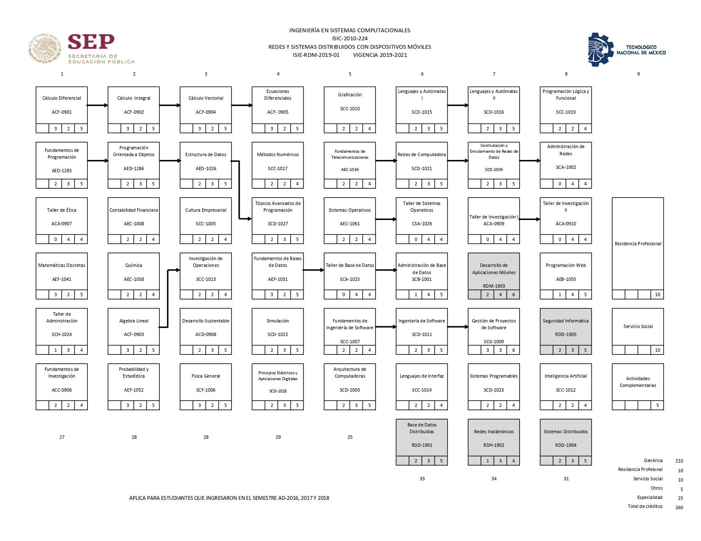

MISIÓN
Formar ingenieros competentes, responsables y críticos, para tomar decisiones orientadas al desarrollo innovador y sustentable, capaces de diseñar, desarrollar, integrar, configurar, implementar y administrar tecnologías de la información.
VISIÓN
Formar líderes en el área de los sistemas computacionales con reconocimiento a nivel global, dando
soluciones
eficaces y eficientes a las necesidades del mercado laboral, privilegiando el entorno social.


METAS Y OBJETIVOS
Formar profesionistas líderes, analíticos, críticos y creativos con visión estratégica y amplio sentido ético, capaces de diseñar, implementar y administrar infraestructura computacional para aportar soluciones innovadoras en beneficio de la sociedad; en un contexto global, multidisciplinario y sostenible.PERFIL DE INGRESO
Bachillerato concluido, preferéntemente en el área de físico - matemático. Aptitudes: habilidad para las matemáticas, captar relaciones espaciales y visiones de conjunto, capacidad de organización, inventiva, razonamiento abstracto y sociablilidad.| 1 | Implementa aplicaciones computacionales para solucionar problemas de diversos contextos, integrando diferentes tecnologías, plataformas o dispositivos. |
|---|---|
| 2 | Analiza, diseña y desarrolla sistemas de información que resulten en proyectos que impacten y que cumplen con los requerimientos. |
| 3 | Diseña, implementa y administra base de datos optimizando los recursos disponibles, conforme a las normas vigentes del manejo y seguridad de la información. |
| 4 | Diseña, configura y administra redes de computadoras para crear soluciones de conectividad en la organización aplicando las normas y estándares vigentes. |
| 5 | Comunica sus ideas de manera efectiva a diferentes audiencias. |
| 6 | Asume las responsabilidades éticas en el desarrolla de su profesión en situaciones relevantes analizando el impacto económico, técnico, social y ambiental. |
| 7 | Reconoce la importancia del aprendizaje continuo para permanecer actualizado en la ingeniería para aplicar e integrar conocimientos de manera adecuada. |
| 8 | Coordina y participa en equipos multidisciplinarios para la aplicación de soluciones innovadoras en diferentes contextos. |
| 1 | Los egresados tendrán la capacidad de planear, analizar, diseñar, desarrollar, implementar y evaluar sistemas computacionales para hacer eficientes los procesos. |
|---|---|
| 2 | Los egresados tendrán la capacidad participar en proyectos de investigación y/o de trasferencia, desarrollar y adaptar las tecnologías en los sectores productivos. |
| 3 | Los egresados tendrán la capacidad de emprender e incubar la creación de nuevas empresas con base tecnológica que promueva el desarrollo socioeconómico de la región, así como su constitución legal . |
| 4 | Los egresados tendrán capacidad de actualizar sus conocimientos mediante estudios de posgrado. |
Ing. Sistemas Computacionales
ISIC-2010-224
Reticula

ESPECIALIDAD
REDES Y SISTEMAS DISTRIBUIDOS CON DISPOSITIVOS MOVILES
ISIE-RDM-2019-01
Edgar Ezequiel Cano Bahena. ©